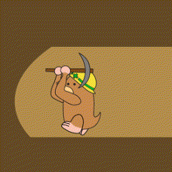
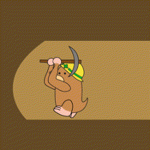
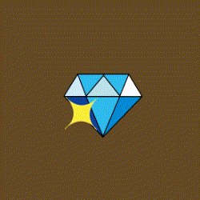
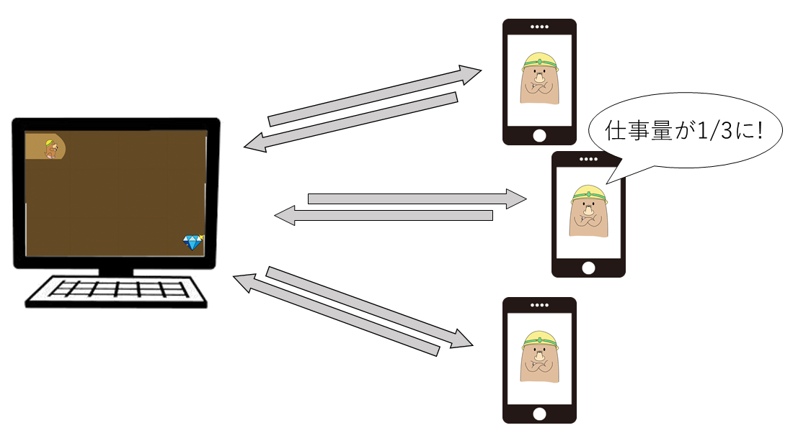

※説明用ページなのでモグちゃんを応援することはできません

展示物の説明
モグちゃん
 


モグちゃんはお宝を見つけるために穴を掘っています。
モグちゃんはピッケルやドリルマシーンなども使いながら穴を掘りますが、モグちゃん一人ではお宝にたどり着けません。
モグちゃんを応援して穴掘りを手伝ってあげましょう!
宝石

モグちゃんの目当てであるお宝です。キレイですね。ダイヤモンドでしょうか。
応援する人が多いほどモグちゃんの掘るスピードも上がります。
たくさんの人で応援するとモグちゃんのスピードはすごいことになります!
中身の説明
穴掘りの仕組み

まず、穴掘り画面が写っているパソコンがランダムな数字を1000個用意します。
この数字を1つずつ応援者のスマホに送ります。
応援者のスマホで送られてきた数字を素因数分解し、解答を返します。
これを数字1000個分繰り返します。
モグちゃんは区切り区切りで穴を掘っていき、1000個解き終わった時に宝石にたどり着きます。
速くなる仕組み

応援者が増えるということは、出題される問題を解く人数が増えるということです。
出題される問題の数は決まっているので、解く人数が増えれば処理の時間は短くなり、モグちゃんの穴掘りが速くなります。
分散処理
このように複数のコンピュータで処理を分担する方式を分散処理(あるいは分散コンピューティング)と呼びます。
データが大規模化している近年、一つのコンピュータで大規模のデータを処理すると、そのコンピュータの負担が大きくなりパフォーマンスが落ちるなどの問題が生じます。
このような問題を解決する技術として分散処理は注目を集めています。
発表研究室
研究室名
コンピューティングデザイン研究室(cdlab)
担当教員
山崎憲一
所属学科
デザイン工学部デザイン工学科
所在キャンパス
田町キャンパス
リンク
芝浦工業大学ホームページ入試情報サイト
cdlabホームページ
GitHub
「穴掘れ!モグちゃん!!」はGitHubにてソースコードを公開しています。
GitHub"穴掘れ!モグちゃん!!"
Presented by cdlab